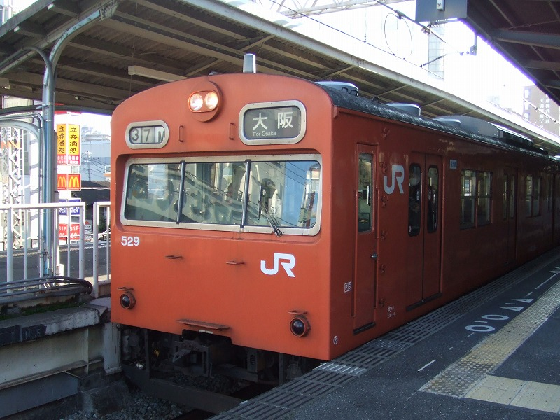
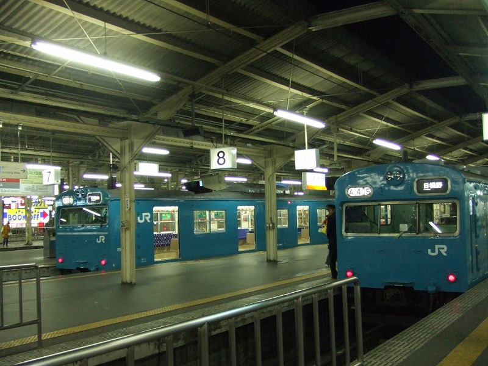

もりあがってますか、北京。
オリンピックのトンデモグッズ期待してます。
最近オレンジ撮ったっけなーと今年に入って撮影した画像を見てみました。すると本年最初の一枚は初詣写真ではなく、

ちゃっかりオレンジ。何やってんねんウチ。1/2 朝８時天満駅撮影
こんなんで勘弁してくれ＞北京＆尼。（ちなみに６６号は良く乗ったので親しみがあるのだ）
１月末に学生時代の友人と飲みました。その帰りの天王寺駅で、友人を置いてダッシュする鉄子。

青ですが、高低セットでっせ！ やったぜ！と喜んだ次の瞬間、我に返りました。
「×下、何やってんねん。。オレ、ついていけんわ。。」と友達。はい、わたしもついていけまへん。
最近ケータイ持った宝ヲタよ、これぐらい勇気もって撮らんかい。
都島